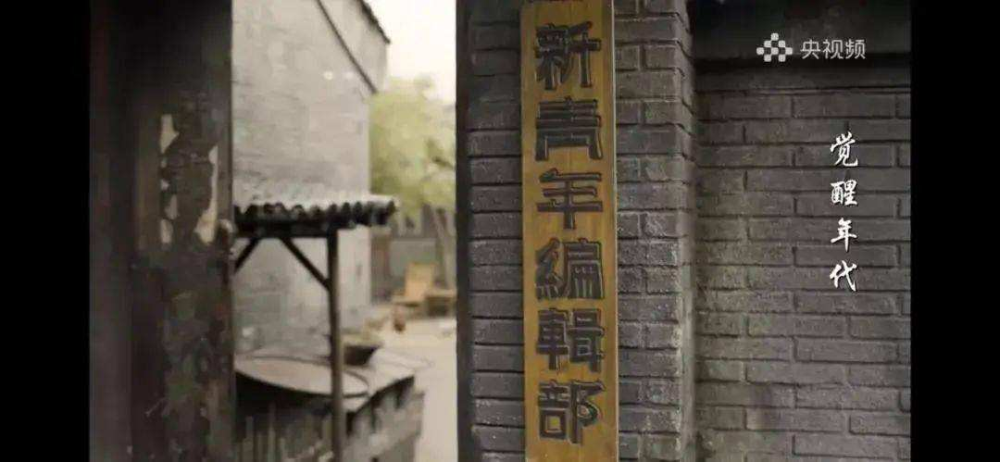
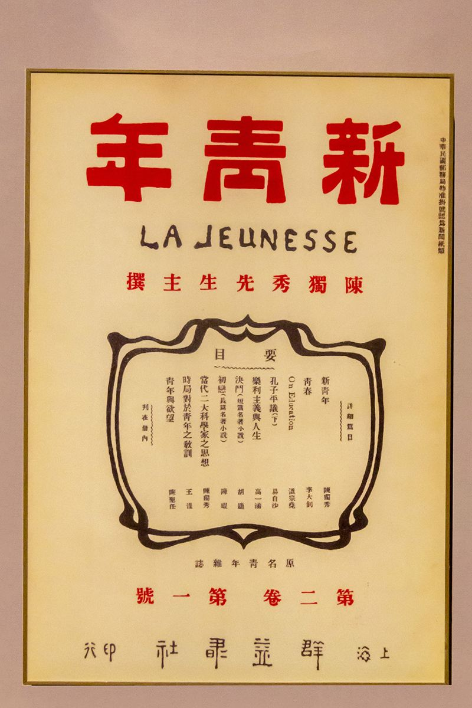
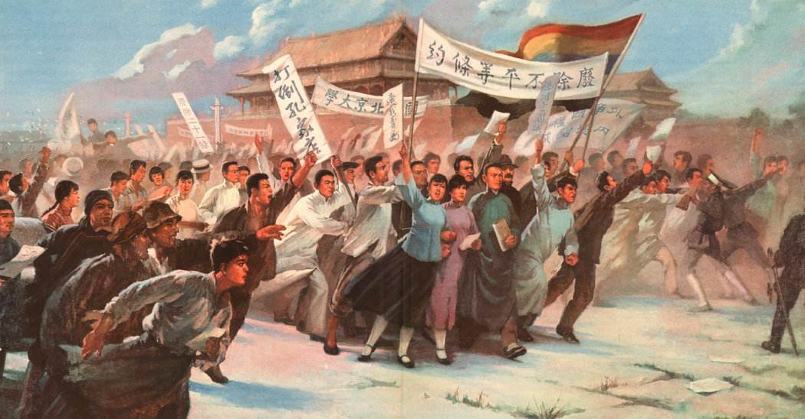
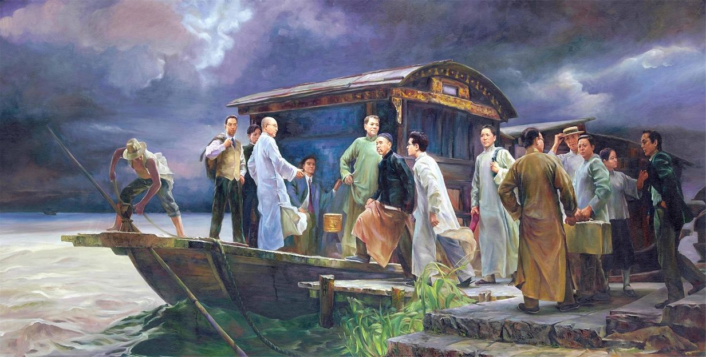
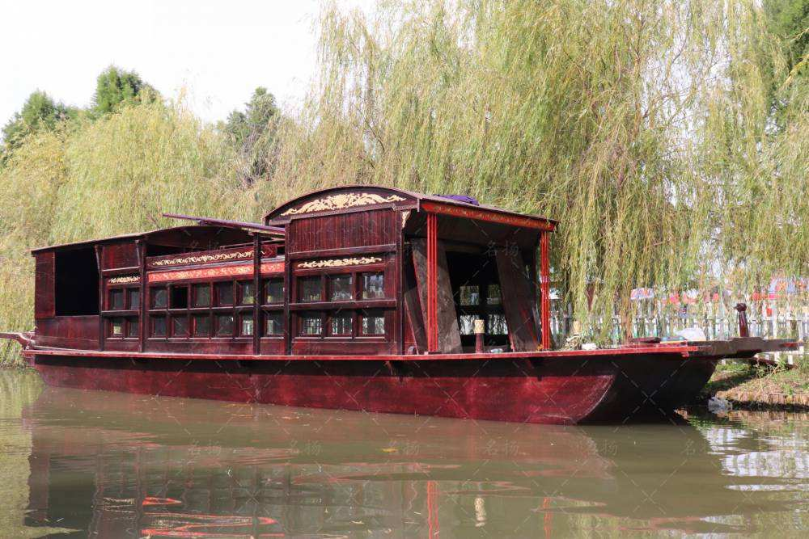

从1840年开始，英国等西方列强用鸦片和炮舰打开了中国的大门，中国逐渐沦为半殖民地半封建社会。帝国主义和中华民族的矛盾，
封建主义和人民大众的矛盾，成为近代中国的两大主要矛盾。在这两大矛盾的运动过程中，中国的一批批仁人志士试图以不同的方式
解救和发展中国，但都一次次失败。中国社会在震荡中苏醒、思考，在震荡中探索、变迁。革命与改良，变革与保守，进步与倒退……
种种思路、种种道路、种种思潮、种种力量，就像黄河初春开河时断裂的冰凌，激烈地涌动，积蓄着能量。中国社会酝酿着一场新的
更大的变革。


以1915年9月陈独秀创办《青年杂志》（后改名《新青年》）为标志，新文化运动兴起。李大钊也积极投身新文化运动。新文化运动的
先进分子以进化论观点和个性解放思想为主要武器，大力提倡新道德、反对旧道德，提倡新文学、反对旧文学，向封建礼教发起全面
挑战，在社会上掀起一股生气勃勃的、革命的思想解放潮流，对社会的发展进步产生了广泛和深刻的影响。
十月革命一声炮响，使中国人看到了一个现实的工人阶级的政权，社会主义已经不仅是学说，而是实际的存在。十月革命之后，尤其是五四运动前后，马克思主义在中国得到更为广泛和深入的传播。中国知识界兴起了一股研究俄国经验和社会义的热潮，新文化运动也迅速发展为以传播马克思主义为中心的思想运动。李大钊先后发表多篇文章，全面介绍马克思的学说，认为中国应当走十月革命的道路。在对各种思潮进行比较分析和将苏维埃俄国作为现实印证的基础上，一批知识分子和热血青年选择了马克思主义作为解决中国问题的良方。

第一次世界大战期间，日本出兵中国山东，强占胶济铁路和青岛。1919年巴黎和会期间，日本蛮横地要求无条件接管德国在胶州湾租借地、胶济铁路以及在山东的一切其他权利。随后，中国爆发了五四运动。五四运动是一场反帝反封建的伟大爱国运动，是近代中国人民伟大觉醒的标志。五四运动促进了马克思主义在中国的传播和同中国工人运动的结合，为中国共产党的成立在思想上干部上做了准备，成为中国新民主主义革命的开端。
随着马克思主义的传播及其与中国工人运动的初步结合，一批接受了马克思主义的先进分子将建立新的无产阶级政党的任务提上了日程。1920年初，李大钊、陈独秀等开始探讨建党问题。1920年8月和10月，上海、北京的共产党早期组织先后成立。武汉、长沙、济南、广州以及欧洲、日本的中国留学生和华侨也建立了党的早期组织。各共产党早期组织有计划、有组织地开展了一系列革命活动，为中国共产党的成立做了充分的准备。
1920年4月，俄共（布）中央和共产国际派遣代表维经斯基来到中国，会见李大钊、陈独秀等人，商议成立中国共产党事宜。共产国际在上海成立了东亚书记处，专事开展帮助建立中国共产党的工作。1921年6月3日，共产国际代表马林取道欧洲来到上海，与另一位共产国际代表尼克尔斯基会合。他们建议及早召开党的代表大会，正式成立中国共产党。李达、李汉俊同当时在广州的陈独秀、在北京的李大钊通过书信商议，决定在上海召开中国共产党第一次全国代表大会。


1921年7月23日晚，中国共产党第一次全国代表大会在上海法租界望志路106号（今兴业路76号）开幕。从7月23日到30日，党的一大一共开了6次会议。7月30日晚上的第六次会议原定通过各项文件并进行选举，但在上海继续开会出现了安全问题。经研究，代表们转移到浙江嘉兴南湖，在一艘租用的游船上召开了最后一天的会议，讨论通过了中国共产党第一个纲领和中国共产党第一个决议。
党的一大的召开，宣告了中国共产党的正式成立。习近平总书记指出：“中国产生了共产党，这是开天辟地的大事变，深刻改变了近代以后中华民族发展的方向和进程，深刻改变了中国人民和中华民族的前途和命运，深刻改变了世界发展的趋势和格局。”